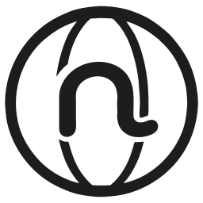
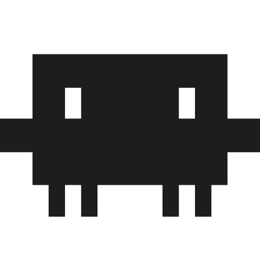

Accounts kept apart
One browser for work, another for home. Give each a name and a description, and agents pick the right one.

Noodle Browser
Browsers that keep their sign-ins and run privately on your Mac. Hand one to an agent in Noodle, or connect Claude Code, Codex and any MCP client.
Free and open source. Needs macOS 26 or later.

Sign in the way you normally would. The browser remembers it, and your agents work as you.
Sign-ins and open pages are kept when you quit, and the pages come back when you return.
Pause Agents stops them doing anything new while you use the browser yourself.
Each browser keeps its own sign-ins and website data, so work, personal and signed-out browsing stay apart.
One browser for work, another for home. Give each a name and a description, and agents pick the right one.
A cyan target shows where the agent is pointing. It never moves your pointer or takes focus from your app.
When a website offers tools for AI agents, they find and use them in a signed-in tab, with no setup.
Noodle Browser comes with a command-line tool and an MCP server. Add it to Claude Code or Codex with one line, and your agent can open pages, read them, fill in forms, click and take screenshots.

Claude Code$ claude mcp add noodle-browser -- noodle-browser mcp Added stdio MCP server noodle-browser $ noodle-browser list Work 3 tabs Personal 1 tab $ noodle-browser open --browser Work \ --url https://github.com/notifications $ noodle-browser click --browser Work \ --target "button.mark-all-read" $ noodle-browser screenshot --browser Work \ --output inbox.png
It can create browsers and use the ones you lend it.
Outside access is off until you turn it on, and Noodle Browser asks before any app connects.
Add a browser to a bot in Noodle and it starts in the background when the bot needs it. The bot works in the same tabs you see.
A bot sends a page back as a card with a screenshot. Click it to open the same tab.
Give the same browser to several bots when they work on the same accounts.
Bots upload files from their work area and save downloads there, up to 8 GB each.
History, bookmarks and downloads belong to each browser, and you switch between them from the toolbar.
See every page you and your agents visited. Agents can search both and manage bookmarks.
Files stay in the browser until you save them to your Mac or an agent copies them.
Give each browser a name, an icon, a colour and a background, even a moving one.
Each browser keeps its sign-ins and website data on your Mac, apart from Safari, Chrome and every other browser. It opens your files only when you choose them.
No Accessibility, Screen Recording or Full Disk Access needed.
Browsers start muted, and websites cannot use your camera or microphone.
No cloud and no sign-up. Your browsers are stored on your disk.
Every line of code is public under the Apache 2.0 licence.
Use it from your favourite agent, or with Noodle.